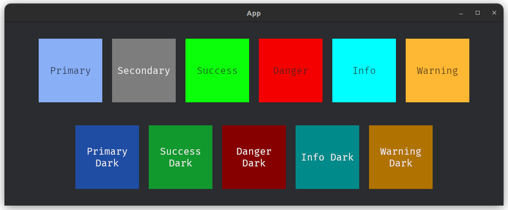

Build desktop GUI application with rust, based on ECS pattern, powered by Bevy game engine.
Simple
Designed with Bevy’s philosophy — widgets are just Rust functions.
Built-in Widgets
Includes useful widgets like buttons, modals, list views and more.
For High-Performance Apps
Leverages Bevy’s massive parallelism for smooth and efficient rendering.
Installation
cargo add famiq
or adding this to Cargo.toml
[dependencies]
famiq = "0.2.7"
Famiq supports only bevy 0.15.x onward. Currently, the latest version of bevy is 0.15.3.
⚠️ IMPORTANT
Famiq is built on top Bevy and relies entirely on its ECS architecture. When you use Famiq, you're actually using the Bevy engine, with Famiq providing an abstraction for its UI system to help you build GUI applications, rather than Game UI.
A solid understanding of Bevy's ECS is required. If you're new to Bevy, I recommend checking out Bevy's quick start guide.
Getting Start
use bevy::prelude::*;
use famiq::prelude::*;
fn main() {
App::new()
.add_plugins(DefaultPlugins)
.add_plugins(FamiqPlugin) // required by Famiq
.add_systems(Startup, setup_ui)
.run();
}
fn setup_ui(
mut commands: Commands,
mut famiq_res: ResMut<FamiqResource>,
asset_server: Res<AssetServer>
) {
commands.spawn(Camera2d::default());
// create a builder
let mut builder = FamiqBuilder::new(&mut commands, &mut famiq_res, &asset_server);
// simple text & button widgets
let text = fa_text(&mut builder, "Hello world").build();
let button = fa_button(&mut builder, "Press me").build();
// add widgets to a container
fa_container(&mut builder).children([text, button]).build();
}run your project cargo run, you will see a text and a button.
What is FamiqPlugin?
FamiqPlugin brings in all the required Resources & Internal systems in order to run the app.
It must be registered after DefaultPlugins provided by Bevy.
What is FamiqBuilder?
In simple terms, FamiqBuilder is the root UI node that acts as a starting point for building and managing widgets. All widgets are created and structured on top of this root.
There are methods provided by FamiqBuilder including:
🔵 use_font_path()
By default, Famiq uses Fira mono regular as default font. To use another font, you can
simply call use_font_path() method.
Example
-
For normal project structure:
my_project/ ├── assets/ │ ├── fonts/ │ │ ├── Some-font.ttf ├── src/let mut builder = FamiqBuilder::new(&mut commands, &mut famiq_res, &asset_server) .use_font_path("fonts/Some-font.ttf"); -
For Multi-Crate/Workspace project structure: In a multi-crate workspace, the custom font path is read from the subcrate/member's
assets/folder:my_project/ ├── sub_crate_1/ │ ├── assets/ │ │ ├── fonts/ │ │ │ ├── Some-font.ttf │ ├── src/ ├── sub_crate_2/ │ ├── assets/ │ ├── src/let mut builder = FamiqBuilder::new(&mut commands, &mut famiq_res, &asset_server) .use_font_path("fonts/Some-font.ttf");
⚠️ some fonts might cause rendering issue including positioning and styling.
🔵 register_tooltip()
This method enable tooltip option for some widgets. Currently only fa_button and fa_circular support tooltip option.
Note
If use_font_path is called, register_tooltip must be called after use_font_path
to ensure that the custom font is applied to the tooltip.
let mut builder = FamiqBuilder::new(&mut commands, &mut famiq_res, &asset_server)
.use_font_path("fonts/Some-font.ttf") // if use_font_path is called
.register_tooltip();🔵 use_style_path()
By default, Famiq will look for json file for styling at assets/styles.json, relative to root directory.
If you want to use another path or name, you can simply call use_style_path() method.
Note
- For Multi-Crate/Workspace project structure: if you have json file inside sub-crate
assetsdirectory, you need to specify full path relative to root directory, not sub-crate.
// normal project
let mut builder = FamiqBuilder::new(&mut commands, &mut famiq_res, &asset_server)
.use_style_path("assets/my-styles.json");
// multi crate/workspace
let mut builder = FamiqBuilder::new(&mut commands, &mut famiq_res, &asset_server)
.use_style_path("path/to/sub-crate/assets/subcrate-style.json");🔵 hot_reload()
This method will enable hot-reload. When it's enabled, every changes in json file will reflect the running app immediately without needing to re-compile the app. This should only be used during development.
let mut builder = FamiqBuilder::new(&mut commands, &mut famiq_res, &asset_server)
.hot_reload();Types of widgets
There are 2 types of widgets provided by Famiq which are Containable widget and Non-containable widgets.
-
Containable widgets can have child widgets and can also be nested inside other containable widgets, including
fa_container,fa_listviewandfa_modal. -
Non-containable widgets cannot have children and must be placed inside a containable widget. including
fa_text,fa_button,fa_text_input,fa_selection,fa_image,fa_circularandfa_progress_bar.
As you can see in the code above, fa_text & fa_button were placed inside fa_container.
How can I style my widgets?
Famiq uses a JSON-based styling system, similar to how HTML uses CSS.
Each widget can have an id or classes, which are used to apply styles from the JSON file.
// by id
let button = fa_button(&mut builder, "Press me").id("#button").build();
// by class or classes
let text_1 = fa_text(&mut builder, "Hello world").class("text important").build();
let text_2 = fa_text(&mut builder, "Hello mom").class("text").build();{
"#button": {
"background_color": "blue"
},
".text": {
"font_size": "40"
},
".important": {
"color": "red"
}
}
Notes
- IDs (id) must start with
#and must match between the widget and the JSON file. - Class names (class) must start with
.in the JSON file.
Currently, id or class assigned to a widget is immutable.
How to write bevy styles in JSON file?
Famiq supports almost all UI styles provided by Bevy engine.
-
color: text color, supports onlysrgba,linear_rgba,hslaand basic colors.Examples,
"color": "srgba 0.961, 0.0, 0.784, 0.9""color": "yellow"
https://docs.rs/bevy/latest/bevy/prelude/struct.TextColor.html
-
font_size: text font size.Example,
"font_size": "14"https://docs.rs/bevy/latest/bevy/prelude/struct.TextFont.html#structfield.font_size
-
background_color: supports onlysrgba,linear_rgba,hslaand basic colors.Examples,
"background_color": "srgba 0.961, 0.0, 0.784, 0.95""background_color": "green"
https://docs.rs/bevy/latest/bevy/prelude/struct.BackgroundColor.html
-
border_color: supports onlysrgba,linear_rgba,hslaand basic colors.Examples,
"border_color": "linear_rgba 0.961, 0.0, 0.784, 0.9""border_color": "pink"
https://docs.rs/bevy/latest/bevy/prelude/struct.BorderColor.html
-
border_radius: top_left, top_right, bottom_left, bottom_right.Example,
"border_radius": "10px 10px 10px 10px"https://docs.rs/bevy/latest/bevy/prelude/struct.BorderRadius.html
-
visibility: supports onlyvisible,hiddenandinherited.https://docs.rs/bevy/latest/bevy/prelude/enum.Visibility.html
-
z_index: indicates that a widget’s front-to-back ordering is not controlled solely by its location in the UI hierarchy. A widget with a higher z-index will appear on top of sibling widgets with a lower z-index.Example,
"z_index": "2" -
display: defines the layout model used by node. Supportsflex,grid,blockandnone. -
position_type: the strategy used to position node. Supportsrelativeandabsolute.https://docs.rs/bevy/latest/bevy/prelude/enum.PositionType.html
-
overflow_x: whether to show or clip overflowing items on the x axis. Supportsvisible,clip,hiddenandscroll.https://docs.rs/bevy/latest/bevy/prelude/struct.Overflow.html
-
overflow_y: whether to show or clip overflowing items on the y axis. Supportsvisible,clip,hiddenandscroll.https://docs.rs/bevy/latest/bevy/prelude/struct.Overflow.html
-
left: the horizontal position of the left edge of the widget.https://docs.rs/bevy/latest/bevy/prelude/struct.Node.html#structfield.left
-
right: the horizontal position of the right edge of the widget.https://docs.rs/bevy/latest/bevy/prelude/struct.Node.html#structfield.right
-
top: the vertical position of the top edge of the widget.https://docs.rs/bevy/latest/bevy/prelude/struct.Node.html#structfield.top
-
bottom: the vertical position of the bottom edge of the widget.https://docs.rs/bevy/latest/bevy/prelude/struct.Node.html#structfield.bottom
-
width: the ideal width of the widget. width is used when it is within the bounds defined bymin_widthandmax_width.https://docs.rs/bevy/latest/bevy/prelude/struct.Node.html#structfield.width
-
height: the ideal height of the widget. height is used when it is within the bounds defined bymin_heightandmax_height.https://docs.rs/bevy/latest/bevy/prelude/struct.Node.html#structfield.height
-
min_width: the minimumwidthof the widget.min_widthis used if it is greater thanwidthand/ormax_width.https://docs.rs/bevy/latest/bevy/prelude/struct.Node.html#structfield.min_width
-
min_height: the minimumheightof the widget.min_heightis used if it is greater thanheightand/ormax_height.https://docs.rs/bevy/latest/bevy/prelude/struct.Node.html#structfield.min_height
-
max_width: the maximumwidthof the widget.max_widthis used if it is within the bounds defined bymin_widthandwidth.https://docs.rs/bevy/latest/bevy/prelude/struct.Node.html#structfield.max_width
-
max_height: the maximumheightof the widget.max_heightis used if it is within the bounds defined bymin_heightandheight.https://docs.rs/bevy/latest/bevy/prelude/struct.Node.html#structfield.max_height
-
align_items: used to control how each individual item is aligned by default within the space they’re given. Supportsdefault,start,end,flex_start,flex_end,center,base_lineandstretch.https://docs.rs/bevy/latest/bevy/prelude/struct.Node.html#structfield.align_items
-
justify_items: used to control how each individual item is aligned by default within the space they’re given. Supportsdefault,start,end,flex_start,flex_end,center,base_lineandstretch.https://docs.rs/bevy/latest/bevy/prelude/struct.Node.html#structfield.justify_items
-
align_left: used to control how the specified item is aligned within the space it’s given. Supportsauto,start,end,flex_start,flex_end,center,base_lineandstretch.https://docs.rs/bevy/latest/bevy/prelude/struct.Node.html#structfield.align_self
-
justify_content: used to control how items are distributed. Supportsdefault,start,end,flex_start,flex_end,center,stretch,space_between,space_evenlyandspace_around.https://docs.rs/bevy/latest/bevy/prelude/struct.Node.html#structfield.justify_content
-
margin: left, right, top, bottom.Example,
"margin": "10px 10px 5px 5px"https://docs.rs/bevy/latest/bevy/prelude/struct.Node.html#structfield.margin
-
margin_left: this will override left value defined inmargin. -
margin_right: this will override right value defined inmargin. -
margin_top: this will override top value defined inmargin. -
margin_bottom: this will override bottom value defined inmargin. -
padding: left, right, top, bottom.Example,
"padding": "10px 10px 5px 5px"https://docs.rs/bevy/latest/bevy/prelude/struct.Node.html#structfield.padding
-
padding_left: this will override left value defined inpadding. -
padding_right: this will override right value defined inpadding. -
padding_top: this will override top value defined inpadding. -
padding_bottom: this will override bottom value defined inpadding. -
border: left, right, top, bottom.Example,
"padding": "10px 10px 5px 5px"https://docs.rs/bevy/latest/bevy/prelude/struct.Node.html#structfield.border
-
border_left: this will override left value defined inborder. -
border_right: this will override right value defined inborder. -
border_top: this will override top value defined inborder. -
border_bottom: this will override bottom value defined inborder. -
flex_direction: whether a Flexbox container should be a row or a column. Supportsrow,column,row_reverseandcolumn_reverse.https://docs.rs/bevy/latest/bevy/prelude/struct.Node.html#structfield.flex_direction
-
flex_wrap: whether a Flexbox container should wrap its contents onto multiple lines if they overflow. Supportsno_wrap,wrapandwrap_reverse.https://docs.rs/bevy/latest/bevy/prelude/struct.Node.html#structfield.flex_wrap
-
flex_grow: defines how much a flexbox item should grow if there’s space available. Defaults to "0" (don’t grow at all).https://docs.rs/bevy/latest/bevy/prelude/struct.Node.html#structfield.flex_grow
-
flex_shrink: defines how much a flexbox item should shrink if there’s not enough space available. Defaults to 1.https://docs.rs/bevy/latest/bevy/prelude/struct.Node.html#structfield.flex_shrink
-
flex_basis: the initial length of a flexbox in the main axis, before flex growing/shrinking properties are applied.https://docs.rs/bevy/latest/bevy/prelude/struct.Node.html#structfield.flex_basis
-
row_gap: the size of the gutters between items in a vertical flexbox layout or between rows in a grid layout.https://docs.rs/bevy/latest/bevy/prelude/struct.Node.html#structfield.row_gap
-
column_gap: the size of the gutters between items in a horizontal flexbox layout or between column in a grid layout.https://docs.rs/bevy/latest/bevy/prelude/struct.Node.html#structfield.column_gap
-
grid_auto_flow: controls whether automatically placed grid items are placed row-wise or column-wise as well as whether the sparse or dense packing algorithm is used. Only affects Grid layouts.https://docs.rs/bevy/latest/bevy/prelude/struct.Node.html#structfield.grid_auto_flow
Interaction
There are 3 types of interaction
- Pressed
- Hovered
- None (leaving hovered)
Famiq emits an event with type of FaInteractionEvent whenever one of the iteraction is matched.
The event then can be read from bevy's EventReader.
Each event has a widget type flag.
pub struct FaInteractionEvent {
pub entity: Entity,
pub widget_id: Option<String>,
pub interaction: Interaction,
pub widget: WidgetType,
}Available widget types
pub enum WidgetType {
Button,
Container,
Text,
FpsText,
TextInput,
TextInputTogglePasswordIcon,
ListView,
ListViewItem,
Selection,
SelectionChoice,
Circular,
ProgressBar,
Image
}Handle interaction
You can write a bevy system that runs in Update schedule to handle Famiq’s widgets interaction.
Example,
fn handle_button_press_system(mut events: EventReader<FaInteractionEvent>) {
for e in events.read() {
if !e.is_pressed(WidgetType::Button) {
return;
}
// make sure this works only with widgets that have id provided
if let Some(id) = e.widget_id.as_ref() {
match id.as_str() {
"#button-one" => {
// do something when #button-one is pressed
},
"#button-two" => {
// do something when #button-two is pressed
}
_ => ()
}
}
}
}Beside is_pressed, there are also is_hovered and is_left (from hovered -> none).
Built-in classes
Famiq provides built-in classes for color, size and spacing.
Color
is-primary | is-secondary | is-success | is-danger | is-info | is-warning |
is-primary-dark | is-success-dark | is-danger-dark | is-info-dark | is-warning-dark |
is-dark.

Size
is-small | is-large
Spacing
Margin
x is a number * 5px
mt-x|mb-x|ml-x|mr-x: margin top, bottom, left and right atx*5px.mt-auto|mb-auto|ml-auto|mr-auto: margin auto for top, bottom, left and right.my-x: margin top and bottom atx*5px.my-auto: margin auto for top and bottom.mx-x: margin left and right atx*5px.mx-auto: margin auto for left and right.
Padding
x is a number * 5px
pt-x|pb-x|pl-x|pr-x: padding top, bottom, left and right atx*5px.pt-auto|pb-auto|pl-auto|pr-auto: padding auto for top, bottom, left and right.py-x: padding top and bottom atx*5px.py-auto: padding auto for top and bottom.px-x: padding left and right atx*5px.px-auto: padding auto for left and right.
Widgets
Famiq provides some default widgets that are likely required to build GUI application.
- Container
- Button
- Text
- FpsText
- TextInput
- Selection
- Circular
- Modal
- ListView
- Image
- Background Image
- Progress Bar
FaContainer
An empty and stylyable widget. Think of it as a div inside HTML. It can also be used to create custom widgets.
Note
-
fa_containerhas its default height set toauto, meaning its height depends on its children. -
If you use
fa_containerto create a custom widget withoutchildren, you must set the height to a specific value.
usage
let container = fa_container(&mut builder).build();Return Entity of the widget which can optionally be used as child for another containable widget.
Available methods
id(&str)class(&str)display(&str)children([Entity])
Example
let boss = fa_text(&mut builder, "Hello Boss").build();
let mom = fa_text(&mut builder, "Hello Mom").build();
fa_container(&mut builder)
.id("#my-container")
.children([boss, mom])
.build();FaButton
Usage
let button = fa_button(&mut builder, "Press me").build();Return Entity of the widget which must be used inside a containable widget.
Available methods
id(&str)class(&str)display(&str)color(&str): set custom background color.
Example
let default_btn = fa_button(&mut builder, "Default button")
.id("#default-btn")
.build();
let info_btn = fa_button(&mut builder, "Info button")
.id("#info-btn")
.class("is-info")
.build();
fa_container(&mut builder)
.children([default_btn, info_btn])
.build();Handle button press
You can write a system that run in Update schedule to handle button events (hovered, pressed, none).
fn handle_button_press_system(mut events: EventReader<FaInteractionEvent>) {
for e in events.read() {
// it's not a button press event, return early.
if !e.is_pressed(WidgetType::Button) {
return;
}
// make sure this works only with buttons that have id provided
if let Some(id) = e.widget_id.as_ref() {
match id.as_str() {
"#default-btn" => {
// do something when default button is pressed
},
"#info-btn" => {
// do something when info button is pressed
}
_ => ()
}
}
}
}FaText
Usage
let text = fa_text(&mut builder, "Some text").build();Return Entity of the widget which must be used inside a containable widget.
Available methods
id(&str)class(&str)display(&str)color(&str): set custom color.
Example
let boss = fa_text(&mut builder, "Hello Boss").build();
let mom = fa_text(&mut builder, "Hello Mom").build();
fa_container(&mut builder).children([boss, mom]).build();FaFpsText
Show FPS value at top-left corner of the window.
This widget doesn't need to be inside a containable widget.
Usage
fa_fps(&mut builder).build();return Entity.
Available methods
id(&str)class(&str)display(&str)change_color(): change number color based on its value.right_side(): make FPS text appears at the top right corner.
Example
fa_fps(&mut builder).change_color().right_side().build();FaTextInput
Widget that allow user to type in texts.
Currently, this widget is not interactive.
Usage
let input = fa_text_input(&mut builder, "Enter your name").build();Return Entity which must be used inside a containable widget.
Available methods
id(&str)class(&str)display(&str)is_password(): mask all the character as*.color(&str): set custom background color.
Example
// default
let input_default = fa_text_input(&mut builder, "Enter your name").build();
// password
let input_password = fa_text_input(&mut builder, "Enter your password")
.is_password()
.build();
fa_container(&mut builder)
.children([input_default, input_password])
.build();Change event
Whenever fa_text_input's value changes, it emits an event called FaTextInputChangeEvent that contains
updated value.
pub struct FaTextInputChangeEvent {
pub entity: Entity,
pub widget_id: Option<String>,
pub new_value: String
}Example,
fn my_system(mut events: EventReader<FaTextInputChangeEvent>) {
for e in events.read() {
// make sure this works only with text input that have id provided
if let Some(id) = e.widget_id.as_ref() {
match id.as_str() {
"#text-input-one" => {
println!("{:?}", e.new_value);
}
"#text-input-two" => {
// do something with #text-input-two new value
}
}
}
}
}FaSelection
Usage
let selection = fa_selection(&mut builder, "Select choice")
.choices(["Choice 1", "Choice 2"])
.build();Return Entity which must be used inside a containable widget.
Available methods
id(&str)class(&str)display(&str)choices([&str])color(&str): set custom background color.
Example
let plans = fa_selection(&mut builder, "Select plan")
.choices(["Personal", "Team", "Enterprise"])
.build();
);
let subscriptions = fa_selection(&mut builder, "Select subscription payment")
.choices(["Weekly", "Monthly", "Annually"])
.build();
);
fa_container(&mut builder).children([plans, subscriptions]).build();Change event
Whenever fa_selection's value changes, it emits an event called FaSelectionChangeEvent that contains
updated value.
pub struct FaSelectionChangeEvent {
pub entity: Entity,
pub widget_id: Option<String>,
pub new_value: String
}Example,
fn my_system(mut events: EventReader<FaSelectionChangeEvent>) {
for e in events.read() {
// make sure this works only with selection that have id provided
if let Some(id) = e.widget_id.as_ref() {
match id.as_str() {
"#selection-one" => {
println!("{:?}", e.new_value);
}
"#selection-two" => {
// do something with #selection-two new value
}
}
}
}
}FaCircular
A spinning circular.
Usage
let circular = fa_circular(&mut builder).build();Return Entity which must be used inside a containable widget.
Available methods
id(&str)class(&str)size(f32): set custom size (width & height).color(&str): set custom color.
Example
// default
let cir = fa_circular(&mut builder).build();
// warning & small
let warning_cir = fa_circular(&mut builder)
.class("is-warning is-small")
.build();
// primary & custom size
let primary_cir = fa_circular(&mut builder)
.class("is-primary")
.size(50.0)
.build();
// custom color
let custom_color_cir = fa_circular(&mut builder)
.color("cyan_500")
.build();
fa_container(&mut builder)
.children([cir, warning_cir, primary_cir, custom_color_cir])
.build();FaModal
Usage
fa_modal(&mut builder).build();Example
let text = fa_text(&mut builder, "Hello from modal").build();
let close_btn = fa_button(&mut builder, "Close").build();
let container = fa_container(&mut builder)
.children([text, close_btn])
.build();
fa_modal(&mut builder).children([container]).build();FaListView
Vertical scrollable container.
Note
fa_listview has height set to 50% of the window or its parent container height.
Usage
let button = fa_button(&mut builder, "Press me").build();
let input = fa_text_input(&mut builder, "Enter your name").build();
fa_listview(&mut builder).children([input, button]).build();return Entity.
Available methods
id(&str)class(&str)display(&str)scroll_height(f32)children([Entity])
FaImage
Image widget.
Note
Currently, it supports only jpg and png format.
Usage
let image = fa_image(&mut builder, "path/to/image.jpg").build();return Entity which must be used inside a containable widget.
Available methods
id(&str)class(&str)set_size(Val, Val): set custom size (width, height). If this method is not called, image's originalwidth&heightwill be used.
Example
let famiq_logo = fa_image(&mut builder, "logo.png")
.set_size(Val::Px(100.0), Val::Px(100.0))
.build();
fa_container(&mut builder).children([famiq_logo]).build();FaBgImage
A widget use to create background image that covers the entire window.
Only one fa_bg_image is allowed. Supports jpg and png only.
Usage
fa_bg_image(&mut builder, "path/to/image.jpg").build();FaProgressBar
There are 2 types of progress bar, Normal & Indeterminate. Default is Indeterminate.
Usage
let bar = fa_progress_bar(&mut builder).build();Return Entity which must be used inside a containable widget.
Available methods
id(&str)class(&str)display(&str)color(&str): set custom color.percentage(f32): set percentage value of the bar.
Example
// default
let default_bar = fa_progress_bar(&mut builder).build();
// info & large
let info_large_bar = fa_progress_bar(&mut builder)
.class("is-info is-large")
.build();
// warning & 50%
let warning_bar = fa_progress_bar(&mut builder)
.percentage(50.0)
.class("is-warning")
.build();
fa_container(&mut builder)
.children([default_bar, info_large_bar, warning_bar])
.build();Resources
Resource is used to store global data that can be accessed from any systems within the app.
Famiq provides resources to interact with widgets in many ways.
- FaContainableResource
- FaTextInputResource
- FaSelectionResource
- FaTextResource
- FaModalState
- FaStyleResource
- FaBgImageResource
FaContainableResources
Used to add, insert and remove children from a containable widget (fa_container, fa_modal, fa_listview).
To use this resource on any containable widget, id must be provided.
see more info about Resources.
Add children
append children to a containable widget.
fn my_system(mut containable_res: ResMut<FaContainableResource>) {
// some logic
containable_res.add_children("#container-id", &[new_text, new_button]);
}Insert children
Insert children at given index into containable widget.
fn my_system(mut containable_res: ResMut<FaContainableResource>) {
// some logic
//
let index: usize = 2;
containable_res.add_children("#container-id", index, &[new_text, new_button]);
}Remove children
Remove children from a containable widget.
You must store Entity of widgets that you want to remove later on in a resource, so that it is
accessible from systems.
#[derive(Resource)]
struct MyResource(Vec<Entity>);
fn setup_ui(
// other params
mut commands: Commands
) {
// some code ...
let my_button = fa_button(&mut builder, "Press").build();
commands.insert_resource(MyResource(vec![my_button]));
}
fn my_system(
mut containable_res: ResMut<FaContainableResource>,
my_resource: Res<MyResource>
) {
// some logic
containable_res.remove_children("#container-id", &my_resource.0);
}FaTextInputResource
Use this resource to get value from fa_text_input.
To use this resource on fa_text_input, id must be provided.
fn my_system(mut input_res: ResMut<FaTextInputResource>) {
// some logic
let name: String = input_res.get_value("#name-input");
}FaSelectionResource
Use this resource to get value from fa_selection.
To use this resource on fa_selection, id must be provided.
fn my_system(mut selection_res: ResMut<FaSelectionResource>) {
// some logic
let choice: String = selection_res.get_value("#selection-id");
}FaTextResource
Use this resource to get or update fa_text's value.
To use this resource on fa_text, id must be provided.
fn my_system(mut text_res: ResMut<FaTextResource>) {
// Some logic
let title = text_res.get_value("#text-id");
println!("{:?}", title); // How to play dota 2
// update title
text_res.update_value("#text-id", "How to play dota 2 in 2025");
}FaModalState
Use this resource to show or hide fa_modal.
Only one fa_modal can be shown at a time.
To use this resource on fa_modal, id must be provided.
fn my_system(mut modal_state: ResMut<FaModalState>) {
// Some logic
modal_state.show("#welcome-modal");
// or
modal_state.hide("#other-modal");
}FaStyleResource
Use this resource to update widget style directly within systems.
To use this resource on any widgets, id must be provided.
Currently, not all styles can be updated via this resource, but this will be improved in future.
Available methods
Change widget background color.
set_background_color(id: &str, color: &str)Change widget border color.
set_border_color(id: &str, color: &str)Change widget border radius "left right top bottom".
set_border_radius(id: &str, radius: &str)Change widget width.
set_width(id: &str, width: &str)Change widget height.
set_height(id: &str, height: &str)Change widget visibility.
set_visibility(id: &str, visibility: &str)Change widget margin "left right top bottom".
set_margin(id: &str, margin: &str)Change widget padding "left right top bottom".
set_padding(id: &str, padding: &str)Change widget display.
set_display(id: &str, display: &str)Change text's color.
set_color(id: &str, color: &str)Change text's font size.
set_font_size(id: &str, size: &str)Change widget shadow color.
set_shadow_color(id: &str, color: &str)FaBgImageResource
Use this resource to change window's background image.
fn my_system(mut bg_res: ResMut<FaBgImageResource>) {
// some logic
bg_res.change_image("path/to/image-in-assets.png");
}Customising your app window
Currently, the only way to customise your window is via bevy's WindowPlugin.
see more about WindowPlugin.
Example
use bevy::prelude::*;
use famiq::prelude::*;
fn custom_window() -> WindowPlugin {
WindowPlugin {
primary_window: Some(Window {
title: "Some title".into(),
name: Some("Some app name".into()),
resolution: (1000.0, 800.0).into(),
resizable: false,
..default()
}),
..default()
}
}
fn main() {
App::new()
.add_plugins(DefaultPlugins.set(custom_window())) // set custom window into DefaultPlugins
.add_plugins(FamiqPlugin)
.add_systems(StartUp, setup_ui)
.run();
}
fn setup_ui() {
// some widgets ..
}FPS
High fps means fast & smooth.
By default, bevy uses a present mode called Fifo, traditionally called "Vsync On". This synchronizes your app’s FPS with your monitor’s refresh rate.
So, no matter how powerful your GPU is, if your monitor runs at 60Hz, your app will be capped at 60 FPS.
To fully utilize your GPU and unlock higher frame rates, switch to the Immediate present mode in WindowPlugin. This removes the FPS cap but may cause screen tearing.
Example
use bevy::prelude::*;
use bevy::window::PresentMode; // make sure to import this
use famiq::prelude::*;
fn custom_window() -> WindowPlugin {
WindowPlugin {
primary_window: Some(Window {
title: "Some title".into(),
name: Some("Some app name".into()),
resolution: (1000.0, 800.0).into(),
resizable: false,
present_mode: PresentMode::Immediate, // here
..default()
}),
..default()
}
}
fn main() {
App::new()
.add_plugins(DefaultPlugins.set(custom_window())) // set custom window into DefaultPlugins
.add_plugins(FamiqPlugin)
.add_systems(StartUp, setup_ui)
.run();
}
fn setup_ui() {
// some widgets ..
}